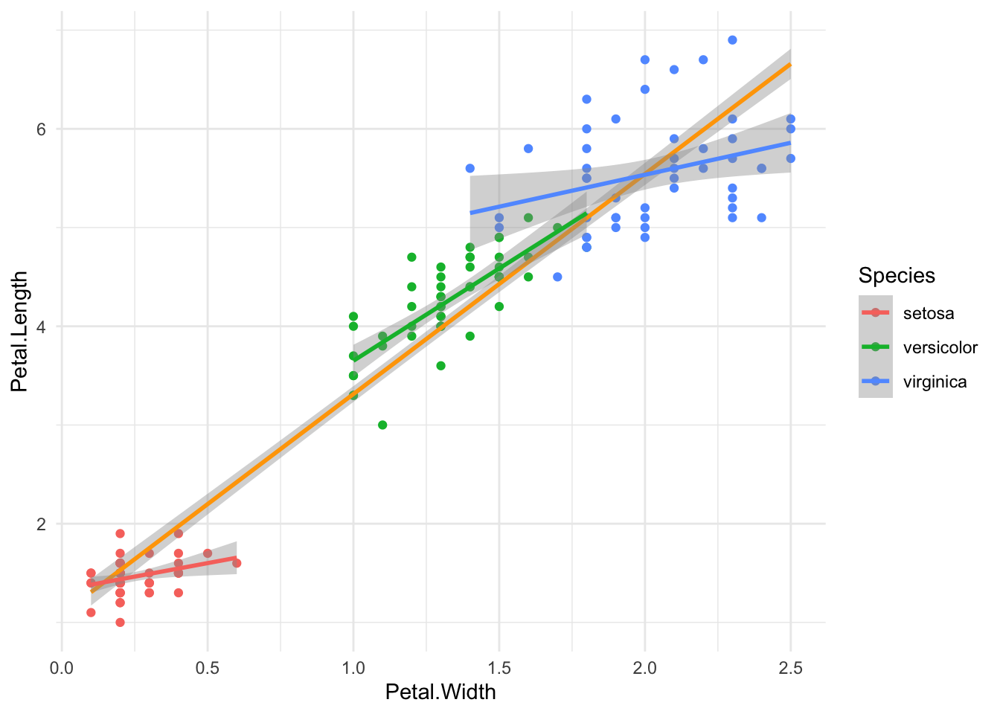
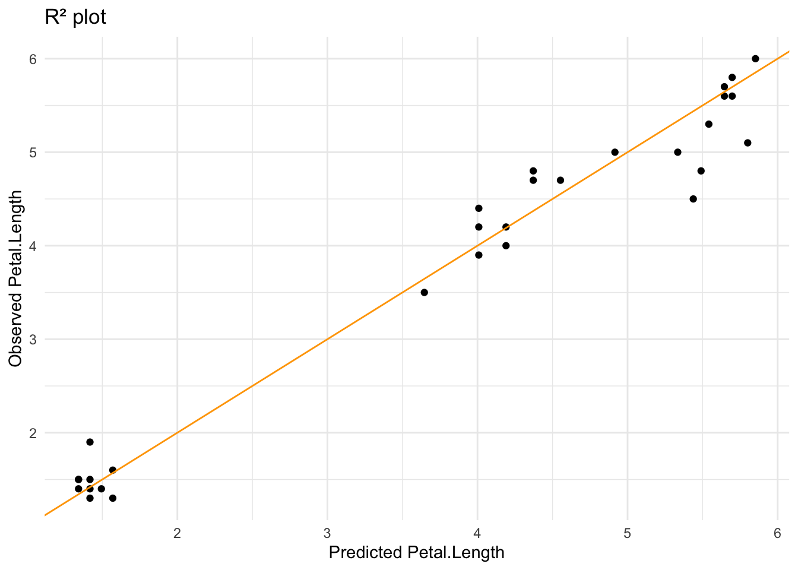

library(tidymodels) # general tidymodels packages
library(skimr) # fancy way of inspecting data, not necessary
library(ggplot2)
The past month or so, I’ve become increasingly intrigued by the tidymodels framework for doing modeling in R, especially after hearing an interview with Julia Silge on the Not so standard deviations podcast with Roger Peng and Hilary Parker.
I envision myself writing more posts on this framework and applications to case studies from linguistics, but since this is the first post, I’ll just share some thoughts I currently have regarding tidymodels.
Tidymodels: first thoughts
- Just like with the tidyverse, I love the modularity and relatively clear sequence of steps that can guide you through “any” analysis. Although, we’re not quite there yet in terms of straightforward applicability.
- I love the tutorials and the “tidytuesday” series on YouTube. Those case studies really provide excellent showcases for how to do common things.
- The idea of making the interfaces to different models more uniform so you can be more efficient.
Let’s talk metaphor for a second:
- The conceptual metaphor of DATA IS MONEY, expressed in phrasings like You need to spend your data budget wisely are helpful. I generally don’t see studies in linguistics that split the data first in a training and testing data set, although we probably should be doing that.
- The conceptual metaphor of PREPPING DATA IS FOLLOWING A RECIPE (the recipes package ) is highly amusing and makes sense.
- The evocative names of the other packages in the core tidymodels set are good too:
rsamplefor resampling,parsnipfor modeling (this is a parsnip, in Dutch it’s called pastinaak),workflowsfor defining workflows,tunefor tuning,yardstickfor measing performance of your models,broomfor cleaning the output of models…
What I don’t super like about tidymodels, is that as of yet, sometimes it’s very hard to see what some tidymodels equivalents to super common modeling operations are.
- For instance, I don’t really know how to do an Multiple Correspondence Analysis (MCA) within tidymodels, even though the Principle Components Analysis (PCA) is very well represented in the tutorials and examples. I’ve tried some
recipes::step_dummy()to get to similar results as I would have gotten withFactoMineRorca, but I find the results not similar enough to surrender my dimension reductions for qualitative variables completely to tidymodels. (Julia Silge and friends, if you are reading this, please figure this out for me.) - I kind of hate that most analyses just stop at the “Oh I collected the metrics, time to turn off my computer” moment. I don’t think the analysis is finished after calculating a model’s performance; this interpretation is often lacking, and I don’t know if that’s a general quirk of data scientists or just specific to the showcases of these packages, but I wish it didn’t stop there.
- Finally, we come to the topic of this post: how do I decide whether or not to keep interaction effects. In “normal” modeling, this is quite straightforward:
Step 1. Make a model with multiple predictors, no interaction.
Step 2. Make another model with the supposed interaction.
Step 3. anova(model1, model2).
If the p value is significant,
the more complex model (the one with the interaction) is what you want.But what about the tidymodels approach to anovas?
Googling “tidymodels anova” will bring you to a lot of pages. Unfortunately, they are not super useful in answering our question:
RQ. How do I do a simple comparison of models to decide if the interaction is valid?
This page takes you to a broom function; this one to the excellent Tidy modeling with R book, more specifically, the chapter on comparing models with resampling. And I agree, resampling seems a very good way to compare models, and I’ve tried to apply that that page to the case study I will present below (nothing too crazy, just the iris dataset), but if I follow the guides there, I end up with no difference between the model with and without interactions, which is not what our anova will say. So yeah. 🤷️
Let’s load packages
Let’s look at the data
iris %>% head() Sepal.Length Sepal.Width Petal.Length Petal.Width Species
1 5.1 3.5 1.4 0.2 setosa
2 4.9 3.0 1.4 0.2 setosa
3 4.7 3.2 1.3 0.2 setosa
4 4.6 3.1 1.5 0.2 setosa
5 5.0 3.6 1.4 0.2 setosa
6 5.4 3.9 1.7 0.4 setosaskimr::skim(iris)| Name | iris |
| Number of rows | 150 |
| Number of columns | 5 |
| _______________________ | |
| Column type frequency: | |
| factor | 1 |
| numeric | 4 |
| ________________________ | |
| Group variables | None |
Variable type: factor
| skim_variable | n_missing | complete_rate | ordered | n_unique | top_counts |
|---|---|---|---|---|---|
| Species | 0 | 1 | FALSE | 3 | set: 50, ver: 50, vir: 50 |
Variable type: numeric
| skim_variable | n_missing | complete_rate | mean | sd | p0 | p25 | p50 | p75 | p100 | hist |
|---|---|---|---|---|---|---|---|---|---|---|
| Sepal.Length | 0 | 1 | 5.84 | 0.83 | 4.3 | 5.1 | 5.80 | 6.4 | 7.9 | ▆▇▇▅▂ |
| Sepal.Width | 0 | 1 | 3.06 | 0.44 | 2.0 | 2.8 | 3.00 | 3.3 | 4.4 | ▁▆▇▂▁ |
| Petal.Length | 0 | 1 | 3.76 | 1.77 | 1.0 | 1.6 | 4.35 | 5.1 | 6.9 | ▇▁▆▇▂ |
| Petal.Width | 0 | 1 | 1.20 | 0.76 | 0.1 | 0.3 | 1.30 | 1.8 | 2.5 | ▇▁▇▅▃ |
What I will be investigating, is if Petal.Length can be predicted by Petal.Width and the Species. But we want to know if there is an interaction between Petal.Width and Species. In other words, our main model will look something like this:
Petal.Length ~ Petal.Width + (or *) SpeciesLet’s plot the data:
iris %>%
ggplot(aes(Petal.Width, Petal.Length)) +
geom_point(aes(color = Species)) +
geom_smooth(method = lm, color = "orange",
formula = 'y~x') +
geom_smooth(method = lm, aes(color = Species),
formula = 'y~x') +
theme_minimal()
We can see three nice groups of Species. Our general linear model smooth (orange) doesn’t seem too bad, but it doesn’t take into account that there may be an interaction between the Species and the Petal.Width, as evidenced by the three different slopes per Species.
The “normal” way of testing this
The code will be quite short:
mod1 <- lm(Petal.Length ~ Petal.Width * Species, data = iris)
# summary(mod1)
mod2 <- lm(Petal.Length ~ Petal.Width + Species, data = iris)
# summary(mod2)
anova(mod1, mod2) %>% tidy()# A tibble: 2 × 7
term df.residual rss df sumsq statistic p.value
<chr> <dbl> <dbl> <dbl> <dbl> <dbl> <dbl>
1 Petal.Length ~ Petal.Width *… 144 18.8 NA NA NA NA
2 Petal.Length ~ Petal.Width +… 146 20.8 -2 -2.02 7.72 6.53e-4We see a very small p value (0.00065) so we know that there is a difference between mod1 (no interaction) and mod2 (with interaction), so we have to choose the one with interaction.
Done! Or not?
Tidymodels
Tidymodels is a lot more verbose than just these three lines of code, but that’s actually a good thing: you can are more conscious of the steps involved, more explicit and can easily add more models. However, here it will feel a bit redundant, but bear with me.
Data budget: rsample
set.seed(1234)
iris_split <- initial_split(iris, strata = Species, prop = 0.8)
iris_train <- training(iris_split)
iris_test <- testing(iris_split)This is kind of the big difference compared to the normal modeling. We split the data (and you can even make folds, but that’s not for today) so that we can gauge the model’s effectiveness later on, before reporting the model itself.
Preprocessing: recipes
# the model without interaction
rec_normal <-
recipe(Petal.Length ~ Petal.Width + Species,
data = iris_train) %>% # we train on the training set
step_dummy(all_nominal_predictors()) %>%
step_center(all_numeric_predictors())
# the model with interaction
rec_interaction <-
rec_normal %>%
step_interact(~ Petal.Width:starts_with("Species"))Notice that we manually create dummy variables (step_dummy) for all categorical predictors. In this case that’s just Species. We also center the numerical predictors because that’s generally a good idea. For the second model, we just have to add one extra step, that is declaring the interactions. You can check the results of this recipe with the prep() function which can then be followed by the bake(new_data = NULL) function to see it in action.
Model selection: parsnip
iris_model <-
linear_reg() %>%
set_engine("lm") %>% # if you want different engines, this is where you would do that
set_mode("regression")Workflows: workflows
# normal workflow
iris_wf <-
workflow() %>%
add_model(iris_model) %>%
add_recipe(rec_normal)
# interaction workflow
iris_wf_interaction <-
iris_wf %>%
update_recipe(rec_interaction)Once again, we can easily recycle workflows. In workflows we bring together the recipe we made for preprocessing and the model we selected for the analysis. Note that we haven’t run anything yet.
Fitting
Here I’m making use of last_fit() on the split object. This makes sure the data is trained on the training dataset and evaluated on the test dataset. But you can of course also fit() on the training or test set separately.
iris_normal_lf <-
last_fit(iris_wf,
split = iris_split)
iris_inter_lf <-
last_fit(iris_wf_interaction,
split = iris_split)How to anova?
This is where I was stuck for the longest time. The answer is actually surprisingly simple: we just use the normal anova() function, but we need to extract the linear model first. We can do that with extract_fit_engine().
normalmodel <- iris_normal_lf %>% extract_fit_engine()
intermodel <- iris_inter_lf %>% extract_fit_engine()
anova(normalmodel, intermodel) %>% tidy()# A tibble: 2 × 7
term df.residual rss df sumsq statistic p.value
<chr> <dbl> <dbl> <dbl> <dbl> <dbl> <dbl>
1 ..y ~ Petal.Width + Species_… 116 17.8 NA NA NA NA
2 ..y ~ Petal.Width + Species_… 114 16.1 2 1.72 6.10 0.00304Bam! Once again, p is significant.
But, why go through all this trouble? Keep reading to get metrics and reasons.
Get metrics: yardstick
Now that we know that the interaction model is the better one, we can also quickly get some metrics for that model. The normal model is now irrelevant.
iris_inter_lf %>% collect_metrics()# A tibble: 2 × 4
.metric .estimator .estimate .config
<chr> <chr> <dbl> <chr>
1 rmse standard 0.318 Preprocessor1_Model1
2 rsq standard 0.968 Preprocessor1_Model1Could we have found this with “normal” modeling? I guess so, but now we have also already tested it against “new data”, i.e., the test data set we set aside in the beginning. So we know the model can predict reasonably well and does not overfit. There is no data leakage.
mod2 %>% glance()# A tibble: 1 × 12
r.squared adj.r.squared sigma statistic p.value df logLik AIC BIC
<dbl> <dbl> <dbl> <dbl> <dbl> <dbl> <dbl> <dbl> <dbl>
1 0.955 0.954 0.378 1036. 3.70e-98 3 -64.8 140. 155.
# ℹ 3 more variables: deviance <dbl>, df.residual <int>, nobs <int>What’s in my model?
This is the step that most tutorials seem to neglect because it’s not really in tidymodels; it’s in general data analysis. But what we usually report is not the root mean square deviation rmse (okay this just looks like a bunch of nouns strung together, but see here) or the R squared R² rsq, but the whole model.
intermodel
Call:
stats::lm(formula = ..y ~ ., data = data)
Coefficients:
(Intercept) Petal.Width
3.7894 1.0309
Species_versicolor Species_virginica
1.8314 3.0006
Petal.Width_x_Species_versicolor Petal.Width_x_Species_virginica
1.0536 -0.2426 intermodel %>% tidy()# A tibble: 6 × 5
term estimate std.error statistic p.value
<chr> <dbl> <dbl> <dbl> <dbl>
1 (Intercept) 3.79 0.197 19.3 1.11e-37
2 Petal.Width 1.03 0.230 4.49 1.73e- 5
3 Species_versicolor 1.83 0.557 3.29 1.34e- 3
4 Species_virginica 3.00 0.585 5.13 1.22e- 6
5 Petal.Width_x_Species_versicolor 1.05 0.652 1.62 1.09e- 1
6 Petal.Width_x_Species_virginica -0.243 0.621 -0.391 6.97e- 1intermodel %>% glance()# A tibble: 1 × 12
r.squared adj.r.squared sigma statistic p.value df logLik AIC BIC
<dbl> <dbl> <dbl> <dbl> <dbl> <dbl> <dbl> <dbl> <dbl>
1 0.958 0.956 0.375 516. 1.55e-76 5 -49.6 113. 133.
# ℹ 3 more variables: deviance <dbl>, df.residual <int>, nobs <int>And finally, we can plot the model’s predictions against the tested values. If we draw an R² plot we can see that it fits pretty well.
iris_inter_lf %>%
collect_predictions() %>%
ggplot(aes(.pred, Petal.Length)) +
geom_point() +
geom_abline(intercept = 0, slope = 1, color = "orange") +
labs(x = "Predicted Petal.Length",
y = "Observed Petal.Length",
title = "R² plot") +
theme_minimal()
So, tidymodels is definitely a longer style of analysis but you can get much more out of your data. And isn’t that what we ultimately want? We have:
- shown that indeed the interaction is there: the petal width can predict the petal length, but there is an influence of the species
- made a model that is protected against overfitting
- tested said model against some of the data in the model (so we know it’s more robust)
- observed the fit of the model (R²)
Of course, these are “just plants” (sorry biased, love languages and I couldn’t get my mint to sprout so may still be vengeful about that). But now there’s a tutorial on how to do simple anova within a tidymodels framework for deciding if you should keep an interaction or not.
Disclaimer on the iris data set
In recent years, it has become more public knowledge that the ubiquitous iris data set was first published in the Annals of Eugenics in 1936 by Ronald Fisher. As this tweet and this post point out, it’s perhaps not the best thing that this data set is so readily used in data examples. Some proposals for other data sets can be found here.
Obviously, eugenics is bad – think of how important this issue was to the projected future in Star Trek with Khan and friends – and I agree that iris is kind of boring. But, just like the Annals of Eugenics rebranded itself to the Annals of Human Genetics, distancing themselves from that terrible phase in science (and we still see the beast rear its head once in a while), I can’t help but think that this silly description of flowers is quite innocent. Perhaps, death of the scholar does exist? After all, if we have to throw away iris because of Fisher’s bad personal views (once again, not good), do we also have to throw out the stats techniques he developed? I know that I’ve used the Fisher-Yates Exact Test to calculate mutual attraction.
And let’s also talk about Karl Pearson, who was the first editor of the Annals of Eugenics. Reading up on his wiki bio was not pleasant either. So should we throw out the Pearson correlation? Or even worse: the p-value (which was first formally introduced in the Pearson’s chi-square test)? Gone with Principled Components Analysis! Histograms? History you mean!
The point is that it is necessary to treat the data and work as separate from their personal life. That means that I agree with the efforts to rename buildings that were named after Fisher or Pearson at UCL, but that at the same time we should still be okay with using iris or statistical techniques developed by these people. The best two arguments for not using iris are that it’s boring and that there exists a penguins dataset (found here).